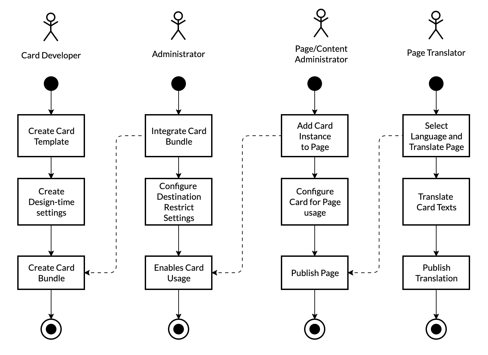

Overview of Integration Card Configuration Editor
After you have finished creating an Integration card as a developer, you should think about the possible
configuration options needed by the integrator personas.
- Which settings does an administrator on the customer side needs to edit to get the card connected to a data source?
- Are there any other mandatory settings that are needed before the card shows a valuable result?
- Which settings would you like to hand over to the administrator or page/content administrator?
- Would any translation be needed?
Configuration Editor
While the developer normally works within Business Application Studio and uses a specialized editor in this environment to create a card from scratch, the Configuration Editor supports the personas that need to configure cards on the customer side:
- Administrator
- Page/Content Administrator
- Translator
Understanding Responsibilities and Personas for Card Integration
Integration cards are used to define reusable UI blocks that can be embedded into various host environments. While developing and integrating a card, various personas can be involved to bring the card to "live" for an end-user. Each persona has a certain responsibility during the integration process. Tools offered to those personas need to be adapted for their roles. Currently, the following personas are targeted:
- Card Developer
Responsible to create a card template that can be integrated into various host environments - Administrator
Responsible to connect the card to the right data and pre-configure the card for usage on pages or dashboards. - Page/Content Administrator
Responsible to embed and configure card instances in pages and dashboards. - Translator
Responsible to translate texts to different languages if needed.

Card Developer
This is the technical guy in the group who builds a card from scratch.
The Card Developer defines the later purpose of the card, its default configuration, appearance, and interaction.
Usually, this persona might not even work in the same company as the other personas.
The Card Developer acts as a provider of an Integration card template that can be used later by the others to be integrated
into a real host environment.
Other responsibilities are also attached to the developer like versioning,
compatibility, and initial translations.
Lastly, the developer is also responsible to define the configuration options that should be offered to the "next"
persona, the Administrator.
Administrator
Less technical, the Administrator, does the first step of card integration on the customer side for a
particular host environment.
The Administrator will configure the destination/connectivity to data sources needed by the card. Those configurations
vary depending from customer to
customer and normally cannot be pre-configured by the developer.
Additionally, the Administrator sets default values that make sense for Page/Content Administrators to cover the most frequent
cases of usage.
If needed, the Administrator hides certain configuration options to avoid misuse or confusion.
Try it Out
Page/Content Administrator
This persona understands the business context where to integrate the ready-to-use card, provided by the
Administrator.
The Page/Content Administrator knows the needs of the end-users and their expectations of the card content.
Try it Out
Translator
A Translator is responsible for text translations. While most often a Page/Content Administrator will
maintain certain settings
only in one language, the translator is involved in the internationalization. This persona is familiar with the
context terminology for the card end-users.
Try it
Out